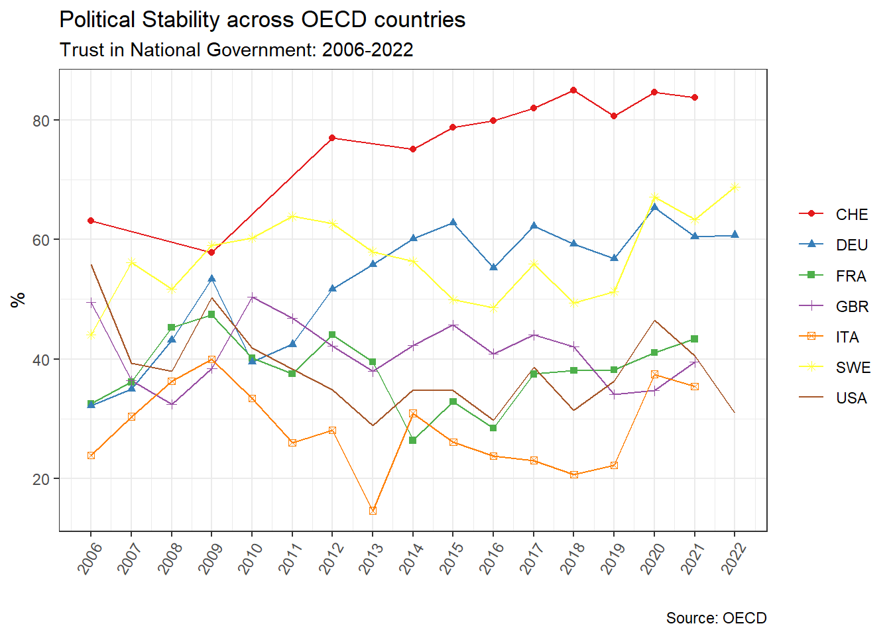

2.2 Political stability in Switzerland: 1981-2016
In fact, relative to Italy and France, which underwent deep periods of political and systemic crises in the last decades, Switzerland’s political stability stands rather remarkably. This stability should, at first sight, not constitute a surprise: Switzerland ranks consistently top among the best performing economies in a wide variety of socio-economic indicators: GDP per capita, Human Living Index (HDI), or even the Economic Complexity Index (ECI)1. If one considers confidence in government as a good indicator of political stability, and if one looks at the data provided by the OECD on that matter, Switzerland indeed stands out as one of the most stable countries in the OECD.
Figure 2.1 shows political stability as measured by the share of respondents who declared having trust in national government in a sample of OECD countries from 2006 to 2022. Switzerland shows the highest level of trust among the countries shown in the figure. Swiss trust in government shows an upward trend since 2009 and the share of Swiss respondents declaring trust in government is consistently equal or above 80% since 2016. This stands in sharp contrast with Italy, France or the US, which show low level of trust. The latter can be interpreted as a reflection of the persistent political crisis in which France and Italy are plunged.
The origins of the Italian crisis goes back to 1992 after the break-up of the dominant social bloc (DBS). The latter, constituted by an alliance between small and large firms, the public sector, and classes dependent on transfers and rent (the employees of the large industries being excluded from the DBS) was made possible and sustained by the growth of the public debt which temporarily satisfied the heterogeneous demand of the DBS, but collapsed due to internal contradictions and public debt reduction policy. Various strategies conducted by Italian politicians tried to consolidate a new DBS, but with mixed results (Palombarini 2001; Amable, Guillaud, and Palombarini 2012).
In France, the crisis started with the instability of the traditional left and right blocs, which used to govern alternately since the post-war period. European integration divided the left bloc in half, while right-wing political strategies were unable to satisfy both its popular and bourgeois elements. The crisis was partially resolved with the successful strategy of Macron to gather both the bourgeois groups of the left and right blocs in a new DBS, the bourgeois bloc, which is nonetheless unstable and fragile because of its restricted size (Amable and Palombarini 2018).
However, other data sources show a more contrasted picture of Switzerland’s political stability. The VOX studies, which conducted post-ballot surveys after each referendum voting session, were harmonized in a cumulative dataset which offer long-run data from 1981 to 2016. A similar figure as Figure 2.1 can thus be made to have a precise focus on Switzerland:

Figure 2.2 shows that Switzerland underwent contrasted periods of political stability and crises in the last decades. A first period ranging from 1981 to 1987 was rather stable despite some variation in trust. Figure 2.2 also depicts well the crisis of the 90s, which constitutes the most turbulent period in Switzerland’s contemporary history. The crisis of the 1990s can be seen with the fall in trust from 65% in 1987 to a historical low level of 39% of Swiss respondents who declared to not have confidence in the federal government in 1995, three years after the rejection of the referendum for the adhesion to the European Economic Area (EEC). Swiss journalists, political observers, activist and scholars wrote extensively on this period which constitutes a rare case of deep political and economic crisis. Brunner and Sgier (1997) show that Swiss citizens lost confidence in almost all political institutions and organizations during the 1990s. José Ribeaud, famous journalist who was one of the first Swiss television presenters, published the dramatically untitled book When Switzerland will disappear (Quand la Suisse Disparaîtra) in 1998. Journalists like José Ribeaud or Pietro Boschetti generally emphasize the multiple political scandals that happened during the 1990s. The first scandal was the resignation of the Radical Elisabeth Kopp from the federal council, in which she was the very first woman member, after she secretly tried to protect her husband from judiciary investigations. The “secret files scandal” happened the same year: the mass system of surveillance of the federal authorities was revealed to the Swiss public. The “secret files scandal” revealed that one twentieth of Swiss citizen and one third of foreign residents were recorded in the public authorities’ files. Last but not least, the dormant fund affair also broke out in 1995 and led to the Eizenstat report (1997) and the Bergier commission (1996), which strongly called into question the moral attitude and neutrality of Switzerland during World War II (Ribeaud 1998; Boschetti 2007).
However, the crisis of the 90s was not only political, but also economic. The stock market crash of October 1987 and the Gulf crisis of 1990-91 ended the longest post-war expansion of the Swiss economy which lasted from 1976 to 1981. The Gulf crisis provoked an inflationary shock which led the Swiss National Bank (SNB) to raise the policy rate. The Swiss economy entered into recession in 1991 and economic stagnation persisted throughout the 1990s. This crisis, along with the crisis of the 1970s, marked the return of unemployment in Switzerland, which had disappeared during the post-war period, mainly because the country used to “export” a discriminated foreign labor force, a strategy which became impossible after crises of the 70s and 90s (OECD 1992).
Does the political and economic crisis of the 1990s constitute the sole period of instability in Switzerland? Figure 2.2 suggests that the early 2000s also represent a period of confidence crisis, as shown by the decline in trust from 2001 to 2005. The global 2001 recession which affected Switzerland surely played a role, but also various political and business events such as the bankruptcy of Swisswair (2001). The results of the 2003 federal election also profoundly disturbed the Swiss political scene: the SVP became the first party of Switzerland and gained another seat in the federal council at the expense of the Christian Democratic People’s Party of Switzerland (PDC). Nonetheless, the upward trend in trust since 2005, which seems to be only slightly affected by the 2007 crisis and the following eurozone crisis, suggests that there is no notable confidence crisis since the 90s and early 2000s.
In view of the results shown in Figure 2.2, can the confidence crises of the 90s and early 2000s be interpreted as political crises in the sense given by the neorealist approach? A loss in confidence is not always synonym of political crisis if there is no break-up of the dominant social bloc. To answer this question, we thus need to explore the evolution of the Swiss social blocs since the post-war period.
2.3 Social blocs, socio-economic factors and voting outcomes in Switzerland
Since the break-up of the post-war Keynesian “historical compromise” between the Swiss Socialist Party and the traditional right parties during the so-called “decade of all dangers” of the 90s (Boschetti 2007), the neoliberal transformation of the Hybrid Swiss Model was also followed by important political change, that some authors interpreted as various forms of latent political crises. The Swiss political scene is still marked by the rise of the Swiss People Party (SVP), one of the most successful far-right populist parties in Europe. The electoral success of the SVP is often associated with the destabilization of the traditional right bloc, which entered a phase of “cacophonic” crisis (Meuwly 2008) which still persists in the early 2020s.

In fact, all the Swiss traditional main parties, the Swiss Socialist Party (SSP) The Radical-Liberals (PLR) and the PDC, are in decline since the post-war period (see Figure 2.3). On the right, the crisis can be seen through the fall in vote shares (apart from the SVP); and the increase in party merges and re-configurations. In 2008, the Bourgeois Democratic Party (PBD) was created after a scission from the SVP. One year later, the Radicals, who created the Swiss modern state in 1848 and dominated Swiss politics until the first half of the 20th century, merged with the liberals to create the PLR. The PBD, whose creation disturbed the composition of a reputed unchangeable federal council, then merged with the PDC to create Le Centre (the Center) in 2021. The federal election of 2023 led to major historical change for the Swiss right. The PLR, very far from its former hegemonic domination of Swiss politics, is now in the fourth place in terms of low chamber parliamentary seats2.
What is the social basis of the Swiss left, center-right and radical-right in the last decades? How are the support for the main Swiss social blocs influenced by socio-economic characteristics? The objective of this chapter is to explore the composition of the main Swiss social blocs in terms of socio-economic characteristics and assess their evolution in the last decades. The previous chapter asked whether the periods of political instability measured through confidence in the Swiss government in the 1990s and early 2005 can be interpreted as a political crisis. By exploring the support for the main Swiss parties since 1981, this question can be partially answered, as well as the main research question of the present paper.
Moreover, a recent trend in political economy developed a tremendous analysis of the long run transformations of political cleavages, social blocs, and voting outcomes in almost all democratic countries around the world. The popularity of inequality studies, after the contributions of renown economists such as Atkinson (2015), Milanovic (2016) and of course Piketty (Piketty 2014), economists recently became interested in the problematic of social conflict and political cleavages. One possible explanation of this sudden interest is the inequality paradox: increasing inequality and neoliberal reforms did not pave the way for growing support for redistribution, taxation of top income and wealth owners, or for left parties. The same paradox could be applied to a “climate change paradox”, that is, the fact that the growing emergency or environmental issues were not followed by increasing support for green parties. For instance, the Swiss green parties were the biggest losers in the 2023 federal elections.
Those paradox thus gave way to a fresh and recent literature linking political cleavages and voting outcomes as function of a set of socio-economic factors, mainly income and education level. Trying to explore this inequality paradox, Piketty (2018) underlines the fact that, rather than bringing back class-based divide back to its post-war salience, the global rise in inequality since the 1970s was followed by the emergence of a new cleavage and a multi-elite party system. During the post-war period, the electoral support for the left parties in The US, UK and France was mainly constituted by popular classes with low income and education levels whereas right-wing parties were supported by high income and education voters. The popular element of the support for the left blocs then transformed in the 1970-80s: left parties became the bloc of the highly educated while the right kept the support of the wealthiest. Piketty called the former bloc the “brahmin left” and the latter the “merchant right” (Piketty 2018, 2019). A further project, which gave birth to the World Political Cleavage and Inequality Database (WPID), showed that these transformations affected almost all Western democracies (Gethin, Martinez-Toledano, and Piketty 2021).
Underlying the rise of a new cleavage in the 70s and 80s, Piketty and the WPID tackle a topic which is well-known in political science: the emergence of a cleavage centered around cultural values which cuts across the traditional class conflict that Piketty calls the “nativists-internationalists” divide. The combination of this new cultural cleavage with the traditional class-based conflict draws a bi-dimensional political space in which four social blocs are possible: an internationalist-egalitarian bloc which is on the left both culturally and economically; an internationalist-inegalitarian bloc on the left culturally but economically on the right; a nativist-inegalitarian bloc on the right culturally and economically; and a nativist-egalitarian bloc which is culturally conservative but economically on the left (Piketty 2018, 2019). This “cultural cleavage” has been given as many labels as it has analysts among political scientists: “materialist-postmaterialist” divide for Inglehart (1971, 1990; 1987); the “libertarian-authoritarian” cleavage (Kitschelt 1994; Flanagan and Lee 2003); winners vs losers of globalization (Hanspeter Kriesi et al. 2006; H. Kriesi et al. 2008; Teney, Lacewell, and Wilde 2014); the “transnational cleavage” (Hooghe and Marks 2018) or the “universalism–particularism” cleavage (Bornschier 2010; Zollinger 2022).
In this context of multi-elite party system and multidimensional political divides, Switzerland is an interesting case study. A widespread idea claims that the class-based cleavage always played relatively a minor role in Switzerland. On the one hand, class conflict was always cut across a wide variety of other divides: religious, linguistic or regional. The religious divide between Protestants and Catholics, which was historically the most structuring conflict, led to the Sonderbund civil war (1847) and the foundation of modern Switzerland in 1848. The federal institutions elaborated during and in the decades following the first Swiss constitution of 1848 can be interpreted as a social compromise between the losers of the Sonderbund civil war, the rural Catholics who opposed the centralization and modernization of the Swiss Confederation, and the victorious Radicals who were mainly Protestants from urban areas (Sciarini 2023). However, these two blocs were highly heterogeneous and subject to internal contradictions.
From the outset of their movement, the Radicals were gathered by an unitary illusion: the pretention to transcend cleavages running Swiss society and unite all its elements thanks to a higher goal: the modernization and centralization of the Swiss state. The “Radical kaleidoscope” was constituted by the working class through the Grütli Union and by an elite divided over the role of the Swiss state. The democrats were advocate of a more centralized and interventionist Swiss state than the liberal and “manchesterian” Radicals, who were more federalist and in favor of laissez-faire. As industrialization, proletarianization and unionization intensified in the late 19th, part of the working class and of the democrat branch joined or founded socialist organizations. In 1888, Albert Steck, a former Radical, founded the Swiss socialist party. The creation of the latter and of the Radical-democratic party in 1894 marked the beginning of the Radical shift towards liberal stances, which became clear-cut after the general strike of 1912, after which “a long-denied class conflict became evident” (Meuwly 2010, 49).
In 2018, Switzerland ranks third in terms of GDP per capita corrected for purchasing power parity among OECD countries (OECD 2019, 14). Switzerland had also the highest HDI in 2021 (Nations 2022, 272) and the second highest ECI in 2021 (“Country Rankings OEC. OEC - the Observatory of Economic Complexity” n.d.).↩︎
See “Elections fédérales: le Centre devancerait le PLR, selon le dernier baromètre de la SSR - Le Temps” (2023)↩︎
2.1 Social blocs, political equilibrium and systemic crisis: concept definitions
The empirical work conducted here and in the following sections are extensively based on the neorealist approach developed by Amable and Palombarini (2005, 2008). The point of departure of this approach is the fundamental diversity of social expectations coming from the heterogeneity of the social structure. This diversity leads to a wide variety of social interests which are in perpetual contradiction and discord. Societies are thus characterized by permanent social conflict, which cannot be forever resolved but only temporarily regulated through the interaction between three spheres of social regulations: ideology, institutions and political mediation (Amable and Palombarini 2023).
Common socio-economic characteristics define socio-economic groups, which only partially translate into socio-political groups. The latter are groups which gather individuals sharing common social expectation regarding public policies and the desired socio-economic model. Regarding the relationships between socio-economic and socio-political groups, neorealism avoids the pitfalls of economic determinism. On the one hand, socio-demographic characteristics and thus socio-economic groups are partly captured by socio-political groups: agents with, for instance, low income level have more incentive to be in favour of pro-redistribution policies. However, they may not be in favor of redistribution if they are culturally persuaded by the dominant ideology to not follow their economic interests. Ideology thus mediates the translation of economic interests into explicit social demand. On the other hand, political mediation represents all the political strategies aimed at gathering socio-political groups into social blocs, which are thus almost never homogeneous (Amable 2021).
Finally, social blocs compete in the political arena with the objective to influence public policy towards the satisfaction of their social demands. A social bloc whose main demands are met and favored by public decision-making is the dominant social bloc (DBS). Social blocs whose demands are not favored by public policy are excluded from the DBS. In the neorealist framework, a political crisis corresponds to the collapse or destabilization of the DBS. Conversely, a stable existence of a DBS corresponds to a situation of political equilibrium. If the break-up of the DBS persists in time and no political strategy is successful in aggregating a new DBS, the crisis becomes systemic (Amable 2003; Amable and Palombarini 2005, 2008, 2023). The concept of political equilibrium should not let the reader think that the existence of a DBS leads to an unchanging stable situation; and, conversely, periods of systemic crises can persist in time and last several decades, as in France (Amable 2017). The contrasts between Italy and France and the one side, and Switzerland on the other makes the latter particularly interesting for the neorealist approach.